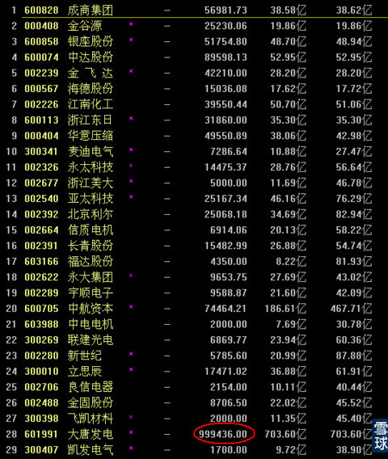

于是今天我就真的休息去了，一整天没看盘，陪我家领导去泡了一天的温泉。
刚刚到家看了一眼行情，和预想差别不是很大，在指数大调整的情况下，几乎所以的小盘股都上涨了，只有金融三剑客集体暴跌。
其中涨停的股票中，除了大唐发电和国中水务等少数股票之外，几乎都是流通股本在10亿以下的。

而且在涨停的过程中，有半数以上股票的涨停股票成交量放大非常明显。
这种现象说明，即使是小盘股的上涨空间还有很充足，而且之后有很多会继续上涨，但是短期震盘派筹的可能性也不排除，主要关注点现在既不是权重股也不是小盘股，而且中盘绩优股是不是准备接力上攻，成为下一波行情的主导者。
行业板块上，煤炭经历了最近的随大盘调整之后，有些股票出现很明显的回踩周线BOLL中轨的走势，遇到一些盘面不是很大，回踩过程比较充分。周线BOLL中轨走平，下轨明显向上的。

可以选择这类煤炭股进入自选，如果上证指数在2830一带企稳，同时这些个股回踩到周线BOLL中轨价格的时候，可以考虑拿出一小部分仓位，买一点做个中长线的埋伏，毕竟山西反腐行动基本收网了，同时煤炭行业确实可能需要政策直接刺激和扶持。
如果时间成熟，少配置一点点也是有点希望的。
毕竟这个行业还没到退出历史舞台的时候，而且历史上多次出现，要么就不涨，要么就涨得自己都害怕的情况。
唯一要注意的就是持有煤炭做长线，仓位千万不要太重。用个十分之一左右的仓位。买了就死等不卖就可以了。其它仓位留给相对活跃的板块。
今天完全没有操作，还是留着之前的30%仓位股票等待上证指数止跌企稳再说。
但是实际上，今天其实我应该是有操作的，因为昨天收盘的时候，东方航空跌破了60分钟线BOLL中轨，今天开盘一个小时以内，不上攻接近中轨附近的话。我两次减仓之后最后剩的那点底仓，按操作纪律是应该出货的。
但是今天出门走得早，而且仓位已经很轻了。加上大调整之后东方航空还会有下一波的上涨，所以没出就不出了，暂时留着。
最后祝大家平安夜快乐！
一会去把家里买的圣诞树组装起来，看看效果。要是好看的话，明天上照片。